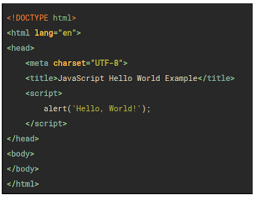
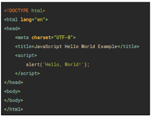

Java
Linguagem compilada, baseada na linguagem C, desenvolvida pela Sun Microsystems,
em 1995, que permite desenvolver programas independentes do sistema operacional.
Muito utilizada para construção de sites.O nome é uma homenagem à Ilha de Java,
produtora de café, uma das bebidas mais consumidas pelos profissionais que desenvolveram
esta linguagem.